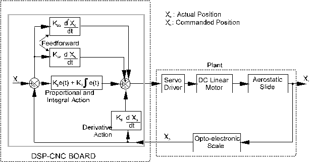
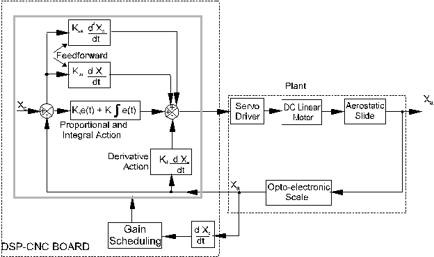
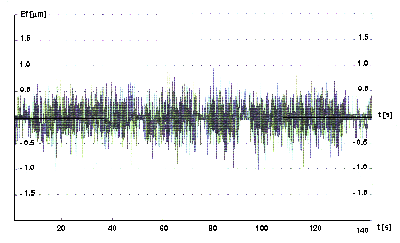
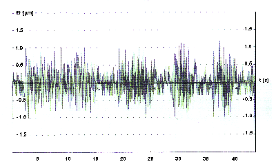
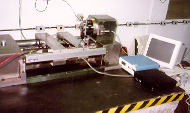

LMP>Linhas de Pesquisa>SISMEC>Técnicas de Controle Aplicadas ao Posicionamento de Ultraprecisão
OBJETIVOSO objetivo deste trabalho é a implementação de técnicas de controle no posicionamento de ultraprecisão do protótipo de uma máquina ferramenta numericamente controlada por computador. PROCEDIMENTOSUma placa DSP - CNC alocada em um microcomputador faz a monitoração
e o controle da máquina ferramenta. Esta placa recebe o valor medido
da posição, e através de um algoritmo de controle tenta,
continuamente, fazer com que a posição real seja igual a posição
comandada. Esta placa tem capacidade de controlar até 8 eixos seqüencialmente,
processar programas peça desenvolvidos em código G e gerenciar
informações coletadas na planta. ESCALONAMENTO DE GANHOSEsta técnica torna possível alterar os parâmetros do controlador PI-D+feedforward de acordo com a velocidade que está sendo aplicada, e então, manter o erro de seguimento em um valor mínimo.  RESULTADOSOs resultados mostram que as técnicas de controle podem reduzir o erro de posicionamento e segmento para a escala submicrométrica e manter o comportamento estável quando de mudanças nas taxas de avanço.
   |
| Contato: SISMEC Rodrigo Lima Stoeterau Prof. Dr. Eng. |
Última Atualização 21.06.2006 |
{kind=link}
{kind=link}